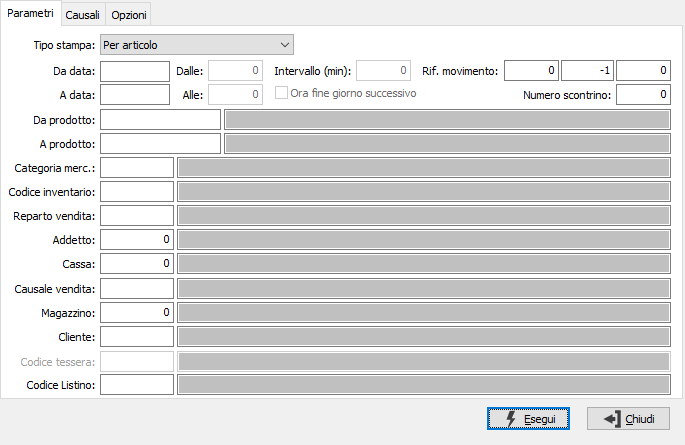
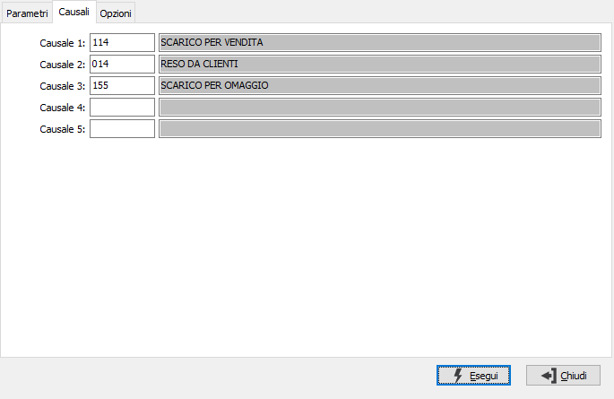
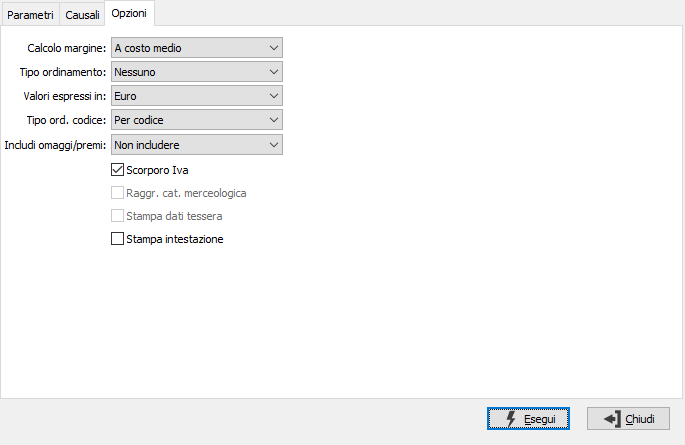

Analisi venduto
Il programma produce prospetti di analisi del venduto relativi a uno o più parametri di selezione forniti dall’utente; in relazione al tipo di stampa richiesta, per prodotto, per cliente, per cassa, per addetto, per fascia oraria, ecc. vengono abilitati o disabilitati i parametri di selezione e le opzioni compatibili con l'analisi richiesta. Se attivata la gestione delle tessere fedeltà (opzione della versione Enterprise) sarà possibile filtrare i movimenti di vendita in base ad una determinata Tessera fedeltà oppure e, nel caso di stampa per cliente, sarà possibile ottenere in coda ai dati del cliente anche il riepilogo della situazione corrente della tessera fedeltà del cliente stesso.


